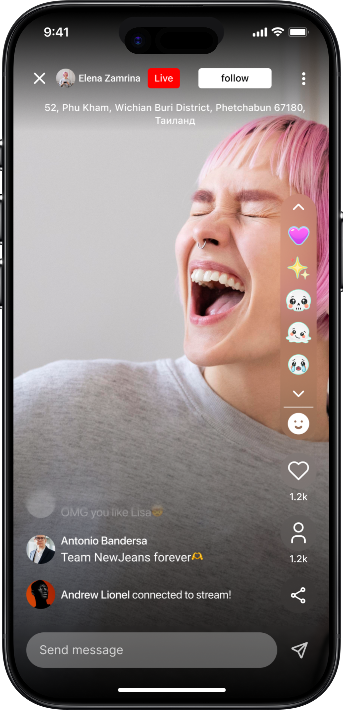
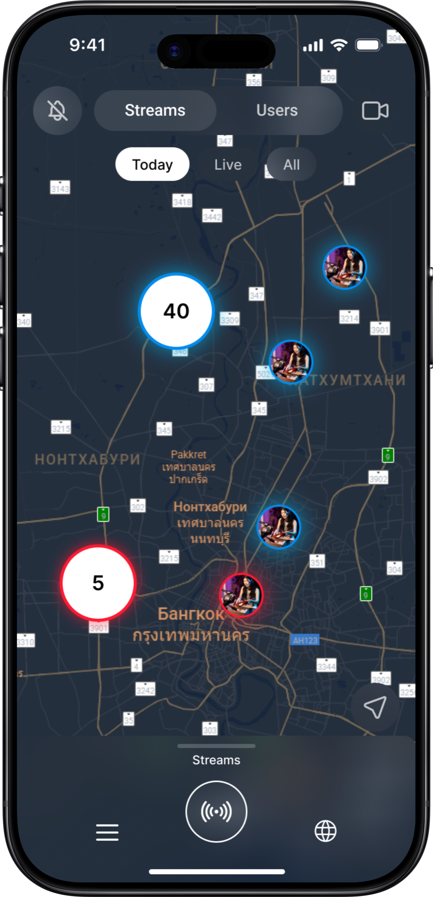
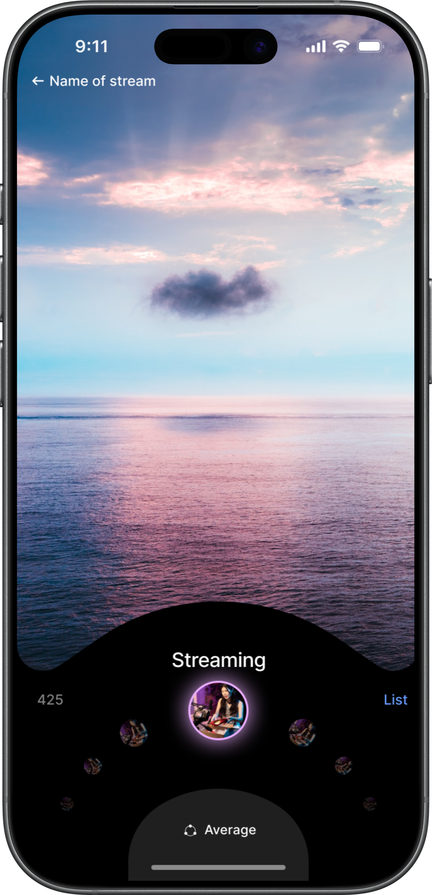
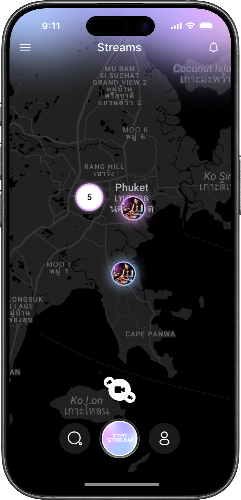

Редизайн главной: от поиска друзей к запуску стрима




Задача
Новый стиль для молодой аудитории
Моя задача — разработать новый фирменный стиль и концепт главного экрана Pyjam для молодой аудитории. Интерфейс должен был привлекать внимание и помогать быстро переходить к просмотру и запуску стримов.
JTBD-интервью
Приоритеты первого входа и повседневного использования
Я провёл JTBD-интервью, чтобы понять, с какими задачами пользователи приходят в приложение. По результатам интервью выяснилось, что часть функций не нужна на первом плане ни при знакомстве с продуктом, ни при повседневном использовании.
Я пересмотрел приоритеты главного экрана и сосредоточил концепт на поиске стримов и запуске собственной трансляции.
Для проверки концепта — три рабочие гипотезы о задачах пользователя:
- Когда я захожу узнать, кто из друзей в эфире, хочу увидеть знакомые лица и открыть нужную трансляцию, чтобы присоединиться к общению.
- Когда я впервые открываю приложение, хочу понять, что здесь можно посмотреть и как начать, чтобы не изучать все функции заранее.
- Когда хочу поделиться происходящим, хочу быстро начать стрим, чтобы пригласить друзей к общению.
Целевое действие
Начать собственный стрим
Главным действием на экране я выбрал «Начать стрим». Это связано с продуктовой целью: увеличить число авторов трансляций и поддержать органический рост аудитории приложения.
Фирменный стиль
Яркая палитра и заметные акценты
Я обновил цветовую палитру, добавил яркости и выразительных акцентов, ориентируясь на молодую аудиторию.
В новом интерфейсе акценты выделяют выбранного пользователя и основные действия: просмотр стримов и запуск собственной трансляции.
Статус и проверка
Реализация перенесена на Q4 2026
Дизайн-концепт главной подготовлен и протестирован. Реализация перенесена на Q4 2026 из-за высокого бэклога команды разработки. После внедрения предстоит оценить использование кругового поиска в продукте и заметность действия «Начать стрим».